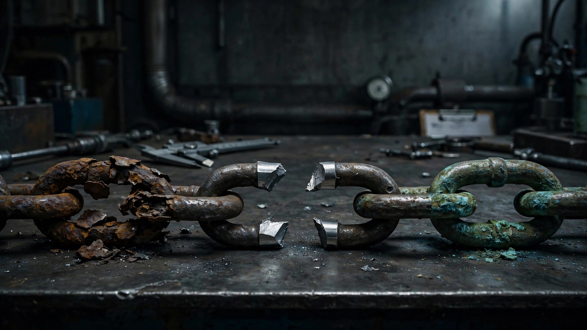

Rivian's Supplier Was Told to Quarantine Bad Parts a Year Ago. It Didn't.

In June 2025, Rivian recalled 27,882 R1S and R1T electric vehicles after discovering that front turn signal lamps from supplier Myotek could fail to illuminate, a violation of Federal Motor Vehicle Safety Standard No. 108.[1] Standard containment protocols followed. Myotek was supposed to quarantine the suspect inventory so no more defective parts would reach Rivian's assembly line. For the next twelve months, those same parts kept flowing to the factory and going into new vehicles.
NHTSA recall 26V508, filed August 5, 2026, adds 3,829 vehicles to a recall population that was supposed to be closed a year ago.[2] Exactly as blunt as it sounds: Myotek failed to properly contain the suspect parts, so Rivian kept building R1S and R1T models with them through May 2026. A combined 3,204 SUVs and 625 trucks that should never have received those lamps.
Between June 2025 and July 2026, Rivian logged seventeen instances of front turn signal failure across the United States, and every one ended the same way: zero crashes, zero injuries, zero deaths. Drivers get a warning when a lamp dies: a dashboard message reading "Turn signal lights not working. Service it soon," plus double-speed blinking and faster clicking sounds. So the system designed to compensate for the defect works better than the system designed to prevent it.
This is the third distinct quality chain failure Rivian has logged in eight months. In January, the company recalled 19,641 previously serviced R1S and R1T vehicles because its own technicians had been following incorrect rear toe link repair procedures since 2022, three years of wrong documentation before anyone caught it.[3] In May, NHTSA opened a preliminary investigation covering 114,922 R1 vehicles after rear toe links separated at highway speed, sending trucks swerving across multiple lanes of traffic.[4] Now a supplier forgot to quarantine parts.
Three failures across three different mechanisms: internal procedures broke first, federal oversight caught the second, and supplier containment failed on the third. Every link in the quality chain snapped independently, which is either spectacularly bad luck or evidence that the chain was decorative.
Rivian estimates only 0.6 percent of the recalled turn signal vehicles actually carry the defect, because a supplier was told to separate the suspect inventory and simply didn't. Rivian's strongest defense across all three failures is the body count: zero fatalities, zero injuries, zero crashes attributed to any of these defects. Whether that reflects a vehicle robust enough to absorb quality failures without killing anyone or just luck is genuinely unclear, and neither qualifies as a quality strategy.
Rivian will notify affected owners by September 29. Inspection and replacement if needed, free, under an hour, mobile-service eligible.[2] If you own a 2022–2026 R1S or R1T, check your VIN at nhtsa.gov/recalls. If your dashboard reads that message about turn signals, believe it.
Sources & References
- NHTSA, Recall 25V-387, Rivian R1S/R1T Front Turn Signal Lamp Failure, June 2025. nhtsa.gov
- NHTSA, Recall 26V-508, Rivian R1S/R1T Front Turn Signal Lamp Failure (Expansion), August 5, 2026. Autoblog, “Rivian Recalls More EVs After Supplier Failed to Contain the Same Bad Parts,” August 12, 2026. autoblog.com
- Carscoops, “Feds Step In After A Broken Bolt Sent Two Rivian R1S SUVs Swerving Across Lanes,” May 2026 (detailing January 2026 recall of 19,641 vehicles for incorrect service procedures). carscoops.com
- Reuters, “US auto safety regulator opens probe into nearly 115,000 Rivian vehicles,” May 28, 2026. reuters.com